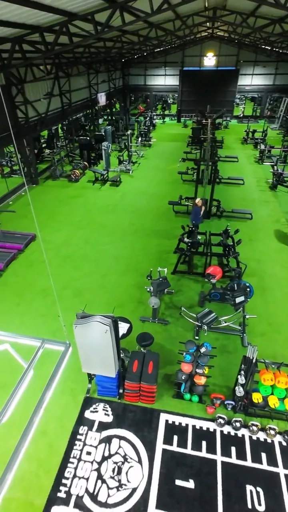

10 Días
Para quien entrena cuando puede
$30.000
/ mes
- 10 sesiones al mes, los días que tú elijas
- Acceso a la sala de máquinas y peso libre
- Evaluación con coach
- Sin permanencia mínima
No venimos a hacer bulto. Venimos a construir fuerza, disciplina y bienestar real. Cuerpo, mente y espíritu, bajo el mismo techo.
Todos incluyen evaluación con coach y acompañamiento durante el mes. Eliges tu plan, nos escribes por WhatsApp y te enviamos el link de pago.
Para quien entrena cuando puede
Tres veces por semana, todo el mes
Todos los días, de lunes a sábado
¿No sabes cuál te conviene? Cuéntanos tu rutina y te recomendamos el plan justo.
Quiero orientación →Cuida el lugar donde vives todos los días.
The Temple Fitness Club nació en Loncoche con una idea simple y potente: el cuerpo no es una máquina que se explota, es un templo que se cuida, se fortalece y se respeta.
Por eso acá no vas a encontrar solo fierros. Vas a encontrar un espacio ordenado, gente que te saluda por tu nombre y profesionales que se toman en serio tu progreso. Entrenamos el cuerpo, pero también la cabeza y la constancia: eso es lo que sostiene los resultados.
Vengas por salud, por estética, por rendimiento o por rehabilitación, tu proceso empieza igual: escuchándote y armando un plan que puedas cumplir.
El progreso se construye en los días en que no dan ganas.
Acá nadie entrena solo. Nos empujamos entre todos.
Medimos, ajustamos y avanzamos. Sin humo ni atajos.
Cuerpo, mente y espíritu. El templo completo.
Técnica correcta, atención profesional y estándares altos.
Cuatro razones concretas por las que la gente de Loncoche entrena con nosotros.
Profesionales del deporte que corrigen tu técnica y te enseñan a entrenar bien, no solo a sudar.
Evaluamos tu punto de partida y armamos una ruta clara, con metas alcanzables y seguimiento.
Espacio limpio, ordenado y con la energía justa para que quieras volver al día siguiente.
Abierto hasta las 23:00 de lunes a viernes. Entrenas cuando puedes, no cuando toca.
Pasto sintético en toda la superficie, iluminación LED, pista funcional marcada y máquinas nuevas. Este es el recorrido completo, sin cortes y sin retoques.

Video @johnfilms.clDe la recepción al fondo de la nave, pasando por cardio, peso libre, máquinas guiadas y la pista funcional. Lo que ves es lo que hay.
Catorce horas diarias de lunes a viernes. La excusa del tiempo se nos acabó.
Las clases grupales se publican cada semana.
Reserva tu cupo por WhatsApp. Feriados con horario especial.
El mejor momento para partir fue hace un año. El segundo mejor es hoy. Ven, conoce el lugar y prueba tu primera clase.
Cuéntanos tu objetivo y te respondemos con la mejor opción para ti.


{kind=link}
{kind=link}
{kind=link}
{kind=link}